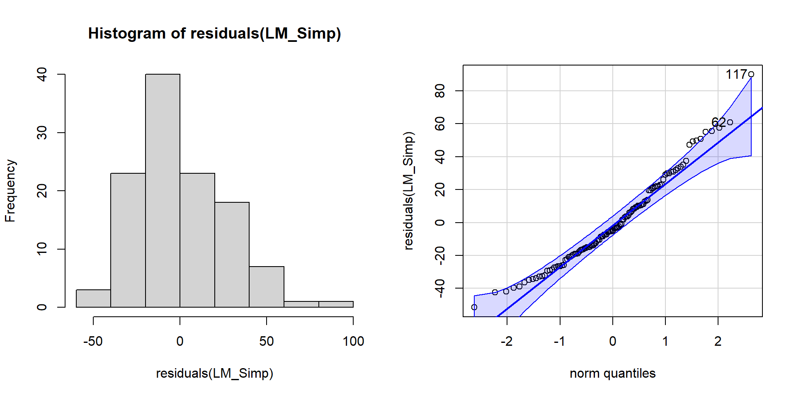
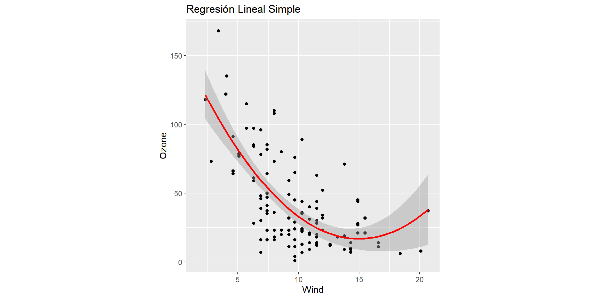
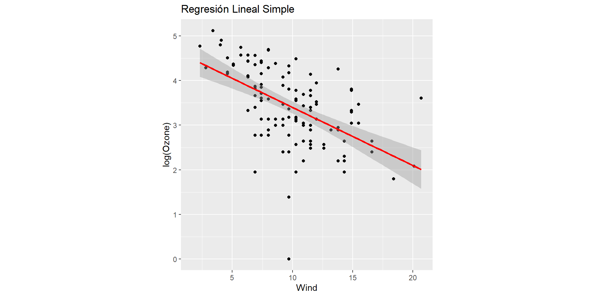
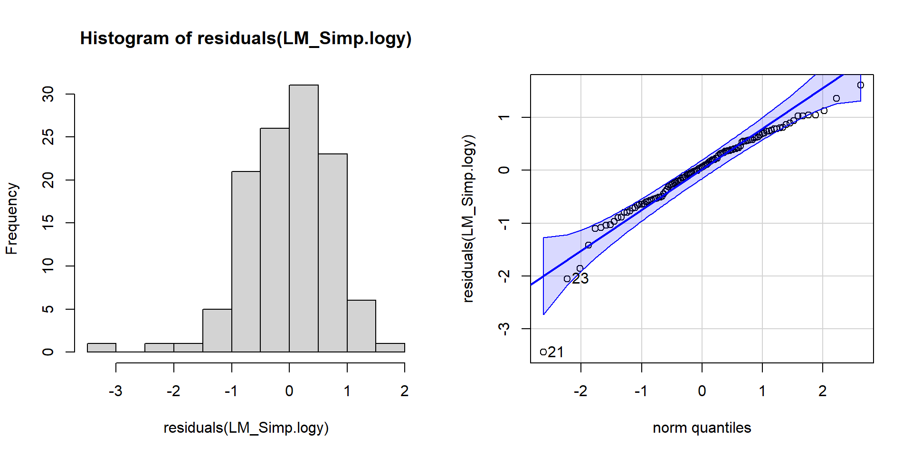
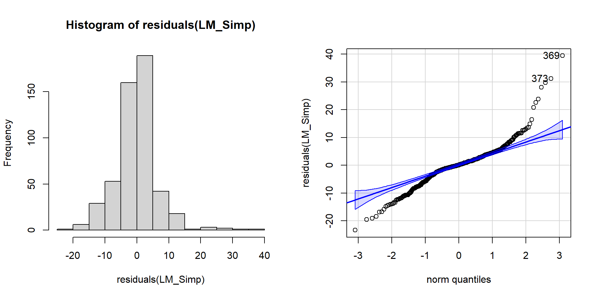
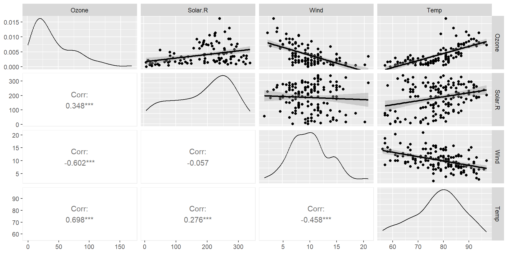
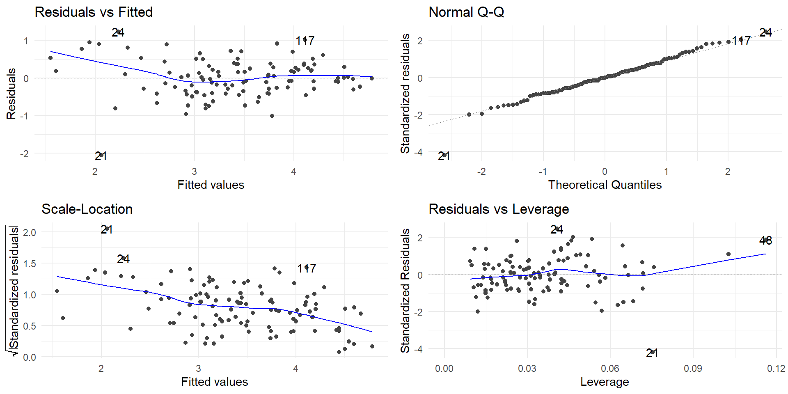
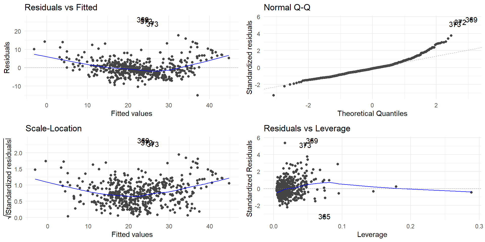

Modelización lineal estándar paso a paso en R
Víctor Manuel Casero Alonso
Departamento de Matemáticas
Objetivos
- Comprende
R… la aplicación práctica de los modelos lineales.
- Interpreta
R… resultados y gráficos en casos prácticos.
Planteamiento del problema de regresión
- ¿Variable respuesta/…?
- ¿Variable explicativa/…? ¿explicativas?
Regresión Lineal Simple
Caso práctico 1: airquality
Medidas de calidad del aire en Nueva York
Obs: NA!!
Estructura
'data.frame': 153 obs. of 6 variables:
$ Ozone : int 41 36 12 18 NA 28 23 19 8 NA ...
$ Solar.R: int 190 118 149 313 NA NA 299 99 19 194 ...
$ Wind : num 7.4 8 12.6 11.5 14.3 14.9 8.6 13.8 20.1 8.6 ...
$ Temp : int 67 72 74 62 56 66 65 59 61 69 ...
$ Month : int 5 5 5 5 5 5 5 5 5 5 ...
$ Day : int 1 2 3 4 5 6 7 8 9 10 ...
Obs: NA!!
Estimación caso 1
# y: Ozone
# x: Wind
# Estimación del modelo
LM_Simp <- lm(Ozone ~ Wind, data = airquality)
# Resumen del modelo
summary(LM_Simp)
Call:
lm(formula = Ozone ~ Wind, data = airquality)
Residuals:
Min 1Q Median 3Q Max
-51.572 -18.854 -4.868 15.234 90.000
Coefficients:
Estimate Std. Error t value Pr(>|t|)
(Intercept) 96.8729 7.2387 13.38 < 2e-16 ***
Wind -5.5509 0.6904 -8.04 9.27e-13 ***
---
Signif. codes: 0 '***' 0.001 '**' 0.01 '*' 0.05 '.' 0.1 ' ' 1
Residual standard error: 26.47 on 114 degrees of freedom
(37 observations deleted due to missingness)
Multiple R-squared: 0.3619, Adjusted R-squared: 0.3563
F-statistic: 64.64 on 1 and 114 DF, p-value: 9.272e-13… Mínimos Cuadrados (Máxima Verosimilitud, bajo normalidad) y mucho más…
Diagrama de dispersión

Validación - gráficamente

Validación - normalidad
Validación - contrastes
Shapiro-Wilk normality test
data: LM_Simp$residuals
W = 0.9673, p-value = 0.006214
studentized Breusch-Pagan test
data: LM_Simp
BP = 7.5642, df = 1, p-value = 0.005954
… con predictor cuadrático

Gráficamente
… transformando la respuesta
… estimación con respuesta transformada
Call:
lm(formula = log(Ozone) ~ Wind, data = airquality)
Residuals:
Min 1Q Median 3Q Max
-3.4396 -0.4998 0.0605 0.5375 1.6051
Coefficients:
Estimate Std. Error t value Pr(>|t|)
(Intercept) 4.70405 0.20034 23.481 < 2e-16 ***
Wind -0.13035 0.01911 -6.822 4.55e-10 ***
---
Signif. codes: 0 '***' 0.001 '**' 0.01 '*' 0.05 '.' 0.1 ' ' 1
Residual standard error: 0.7325 on 114 degrees of freedom
(37 observations deleted due to missingness)
Multiple R-squared: 0.2899, Adjusted R-squared: 0.2837
F-statistic: 46.54 on 1 and 114 DF, p-value: 4.551e-10¡Ojo ahora con la interpretación!
Validación

Validación - normalidad
Contrastes
Caso práctico 2
Datos: Boston
Precios de “viviendas” en Boston (USA)
crim zn indus chas nox rm age dis rad tax ptratio lstat medv
1 0.00632 18 2.31 0 0.538 6.575 65.2 4.0900 1 296 15.3 4.98 24.0
2 0.02731 0 7.07 0 0.469 6.421 78.9 4.9671 2 242 17.8 9.14 21.6
3 0.02729 0 7.07 0 0.469 7.185 61.1 4.9671 2 242 17.8 4.03 34.7
4 0.03237 0 2.18 0 0.458 6.998 45.8 6.0622 3 222 18.7 2.94 33.4
5 0.06905 0 2.18 0 0.458 7.147 54.2 6.0622 3 222 18.7 5.33 36.2
6 0.02985 0 2.18 0 0.458 6.430 58.7 6.0622 3 222 18.7 5.21 28.7Estimación Caso 2
Call:
lm(formula = medv ~ rm, data = Boston)
Residuals:
Min 1Q Median 3Q Max
-23.346 -2.547 0.090 2.986 39.433
Coefficients:
Estimate Std. Error t value Pr(>|t|)
(Intercept) -34.671 2.650 -13.08 <2e-16 ***
rm 9.102 0.419 21.72 <2e-16 ***
---
Signif. codes: 0 '***' 0.001 '**' 0.01 '*' 0.05 '.' 0.1 ' ' 1
Residual standard error: 6.616 on 504 degrees of freedom
Multiple R-squared: 0.4835, Adjusted R-squared: 0.4825
F-statistic: 471.8 on 1 and 504 DF, p-value: < 2.2e-16Diagrama de dispersión

Validación

Validación
Validación - contrastes
Regresión Lineal Múltiple
Caso 1 (con respuesta logarítmica)
Call:
lm(formula = log(Ozone) ~ Solar.R + Wind + Temp, data = airquality)
Residuals:
Min 1Q Median 3Q Max
-2.06193 -0.29970 -0.00231 0.30756 1.23578
Coefficients:
Estimate Std. Error t value Pr(>|t|)
(Intercept) -0.2621323 0.5535669 -0.474 0.636798
Solar.R 0.0025152 0.0005567 4.518 1.62e-05 ***
Wind -0.0615625 0.0157130 -3.918 0.000158 ***
Temp 0.0491711 0.0060875 8.077 1.07e-12 ***
---
Signif. codes: 0 '***' 0.001 '**' 0.01 '*' 0.05 '.' 0.1 ' ' 1
Residual standard error: 0.5086 on 107 degrees of freedom
(42 observations deleted due to missingness)
Multiple R-squared: 0.6644, Adjusted R-squared: 0.655
F-statistic: 70.62 on 3 and 107 DF, p-value: < 2.2e-16Diagramas de dispersión parciales
Validación
¿Multicolinealidad?
Regresión Lineal Múltiple caso 2
Estimación
Call:
lm(formula = medv ~ ., data = Boston)
Residuals:
Min 1Q Median 3Q Max
-15.1304 -2.7673 -0.5814 1.9414 26.2526
Coefficients:
Estimate Std. Error t value Pr(>|t|)
(Intercept) 41.617270 4.936039 8.431 3.79e-16 ***
crim -0.121389 0.033000 -3.678 0.000261 ***
zn 0.046963 0.013879 3.384 0.000772 ***
indus 0.013468 0.062145 0.217 0.828520
chas 2.839993 0.870007 3.264 0.001173 **
nox -18.758022 3.851355 -4.870 1.50e-06 ***
rm 3.658119 0.420246 8.705 < 2e-16 ***
age 0.003611 0.013329 0.271 0.786595
dis -1.490754 0.201623 -7.394 6.17e-13 ***
rad 0.289405 0.066908 4.325 1.84e-05 ***
tax -0.012682 0.003801 -3.337 0.000912 ***
ptratio -0.937533 0.132206 -7.091 4.63e-12 ***
lstat -0.552019 0.050659 -10.897 < 2e-16 ***
---
Signif. codes: 0 '***' 0.001 '**' 0.01 '*' 0.05 '.' 0.1 ' ' 1
Residual standard error: 4.798 on 493 degrees of freedom
Multiple R-squared: 0.7343, Adjusted R-squared: 0.7278
F-statistic: 113.5 on 12 and 493 DF, p-value: < 2.2e-16Update
Call:
lm(formula = medv ~ crim + zn + chas + nox + rm + dis + rad +
tax + ptratio + lstat, data = Boston)
Residuals:
Min 1Q Median 3Q Max
-15.1814 -2.7625 -0.6243 1.8448 26.3920
Coefficients:
Estimate Std. Error t value Pr(>|t|)
(Intercept) 41.451747 4.903283 8.454 3.18e-16 ***
crim -0.121665 0.032919 -3.696 0.000244 ***
zn 0.046191 0.013673 3.378 0.000787 ***
chas 2.871873 0.862591 3.329 0.000935 ***
nox -18.262427 3.565247 -5.122 4.33e-07 ***
rm 3.672957 0.409127 8.978 < 2e-16 ***
dis -1.515951 0.187675 -8.078 5.08e-15 ***
rad 0.283932 0.063945 4.440 1.11e-05 ***
tax -0.012292 0.003407 -3.608 0.000340 ***
ptratio -0.930961 0.130423 -7.138 3.39e-12 ***
lstat -0.546509 0.047442 -11.519 < 2e-16 ***
---
Signif. codes: 0 '***' 0.001 '**' 0.01 '*' 0.05 '.' 0.1 ' ' 1
Residual standard error: 4.789 on 495 degrees of freedom
Multiple R-squared: 0.7342, Adjusted R-squared: 0.7289
F-statistic: 136.8 on 10 and 495 DF, p-value: < 2.2e-16¿Multicolinealidad?
Validación
¡Ojo! predictores cualitativos… e ¡interacción!
Boston$chas <- factor(Boston$chas)
LM_Mult.boston2 <- update(LM_Mult.boston2,
. ~ . + chas:lstat) # añadimos interacción
summary(LM_Mult.boston2)
Call:
lm(formula = medv ~ crim + zn + chas + nox + rm + dis + rad +
tax + ptratio + lstat + chas:lstat, data = Boston)
Residuals:
Min 1Q Median 3Q Max
-16.5076 -2.6822 -0.5777 1.8571 26.6551
Coefficients:
Estimate Std. Error t value Pr(>|t|)
(Intercept) 41.894570 4.883761 8.578 < 2e-16 ***
crim -0.124749 0.032790 -3.805 0.000160 ***
zn 0.045203 0.013615 3.320 0.000966 ***
chas1 6.385399 1.705168 3.745 0.000202 ***
nox -17.811677 3.553515 -5.012 7.50e-07 ***
rm 3.569788 0.409495 8.718 < 2e-16 ***
dis -1.481603 0.187347 -7.908 1.72e-14 ***
rad 0.285905 0.063650 4.492 8.80e-06 ***
tax -0.012930 0.003401 -3.802 0.000162 ***
ptratio -0.940869 0.129876 -7.244 1.68e-12 ***
lstat -0.525189 0.048058 -10.928 < 2e-16 ***
chas1:lstat -0.309581 0.129811 -2.385 0.017462 *
---
Signif. codes: 0 '***' 0.001 '**' 0.01 '*' 0.05 '.' 0.1 ' ' 1
Residual standard error: 4.766 on 494 degrees of freedom
Multiple R-squared: 0.7373, Adjusted R-squared: 0.7314
F-statistic: 126 on 11 and 494 DF, p-value: < 2.2e-16… complicaciones sin límites
Gráficamente
ggplot(Boston, aes(x = lstat, y = medv, color = factor(chas))) +
geom_point() +
geom_smooth(method = "lm", se = FALSE) +
scale_color_manual(values = c("0" = "steelblue", "1" = "firebrick"),
labels = c("No", "Sí"),
name = "Charles River") +
labs(title = "Relación entre MEDV y LSTAT, diferenciada por CHAS",
x = "Porcentaje de población con bajo estatus (LSTAT)",
y = "Valor mediano de la vivienda (MEDV)") +
theme_minimal(base_size = 14)Conclusiones
- Los modelos lineales son versátiles.
- Permiten interpretar relaciones y realizar inferencias.
- Pero… ¡Cuidado con los supuestos! … ¡Compruébalos!
Referencias
Casero-Alonso, V., & Durbán, M. (2025). Modelización lineal. En G. Fernández-Avilés & J.-M. Montero (Coords.), Fundamentos de ciencia de datos con R (Cap. 15). McGraw-Hill.
¡¡ Muchas gracias por la atención !!
Modelización lineal estándar paso a paso en R
Victormanuel.casero@uclm.es
Departamento de Matemáticas